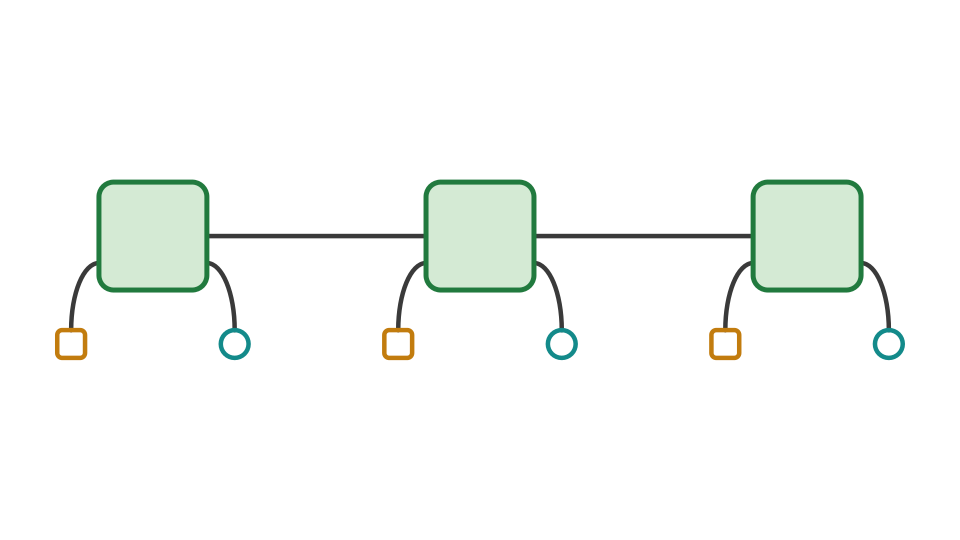
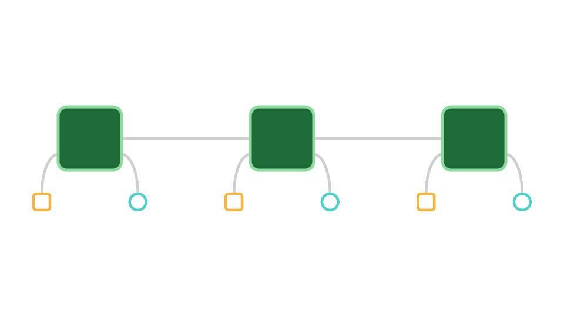
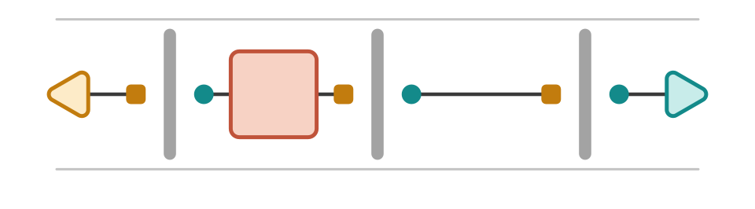
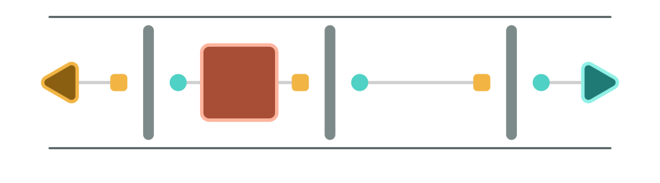

ProcessTensors.jl
ProcessTensors.jl is an ITensor-native framework for studying quantum systems with environmental memory. Construct a process tensor from a microscopic environment, then reuse it with different preparations, controls, measurements, and multi-time probes.
These tutorials connect the physical picture, tensor-network representation, and runnable Julia code, helping you learn the process-tensor framework while using it to design numerical experiments.
Build once, explore many experiments
When a system interacts with an environment, its present reduced state may not contain all the information needed to predict its future. The environment can retain information about earlier interactions and interventions. A process tensor describes how the system responds to interventions at different times, including the influence of environmental memory. ProcessTensors.jl represents this multi-time response using matrix product operators, allowing the same process tensor to be reused across different experiments.




Get started
Follow Installation to set up the package, then choose your learning route depending on what suits you the best
| Your starting point | Suggested route |
|---|---|
| Ready to use process tensors | Installation, then Construct your first process tensor and Explore a process with instruments. Consult the API reference as needed. |
| Learning the physical framework | Start with Process Tensors, then Construct your first process tensor. |
| New to ITensor or Liouville representations | Use ITensor Basics, MPS and MPO Basics, and Liouville-Space Basics for the supporting conventions. |
The foundations explain named ITensor indices, density matrices, and vectorisation. You can consult them whenever these concepts arise in a process-tensor calculation.
For theory and notation, see Process Tensors, Quantum States and Liouville Space, and Tensor Networks in Physics. For progress reporting, threading, and execution settings, see Advanced Usage.
What can you explore?
| What can you explore? | Suggested walkthrough |
|---|---|
| Build a process from several environmental modes | Spin-bath process tensor |
| Compress spin and thermal bosonic environments with ACE | Central-spin dynamics using ACE; Thermal spin-boson dynamics using ACE |
| Design preparations, controls, and measurements | Explore a process with instruments |
| Probe bath memory through repeated measurements | Ramsey readouts as a probe of bath memory |
| Calculate multi-time correlations | Multi-time correlations |
| Carry an ancillary system between interventions | Testers and noisy quantum circuit |
Use Dense() for small environments or ACE() to incorporate initially independent bath modes and compress their temporal influence. Gaussian PT-TEMPO and chain-mapped constructions are planned extensions.
Additional tools for open quantum dynamics
The package also provides Hilbert- and Liouville-space MPS/MPO objects, density-matrix conversions, Lindblad generators, and TEBD/TDVP evolution. These tools support model preparation and reference calculations and can also be used independently for time-local dynamics.
See Unitary Dynamics for closed-system evolution and Dissipative Dynamics for Markovian open-system evolution. Larger models include a dissipative spin chain and driven-dissipative Bose–Hubbard dynamics.
Citing and contributing
If you use ProcessTensors.jl in research, please cite the package repository and the relevant methods and theory references linked in the documentation.
Bug reports, questions, new examples, and algorithm contributions are welcome. Visit the issue tracker for questions and feedback, or read the contribution guidelines to get involved.